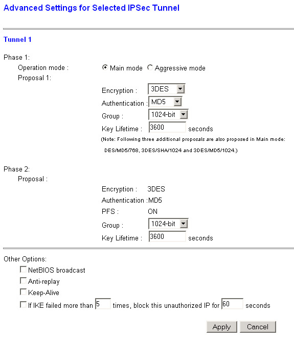

|
2008-07-04
1. Typical Configuration

2. Linksys BEFVP41 Configuration Settings
Local Secure Group: The network behind the Linksys BEFVP41
Remote Secure Group: The network behind the FreeS/WAN Gateway
Remote Security Gateway: Use either IP Address or FQDN, and set this to the address of the FreeS/WAN Security
Gateway.

You must use the above settings exactly as shown for this to work.
By default, the BEFVP41 only uses single DES with a 786-bit group in
the proposals. As FreeS/WAN doesn't support single DES, this is rejected,
and Phase 2 is never reached.
3. FreeS/WAN Configuration
If you have remote sites with static IP addresses, you can specify them by IP address instead of %any. This way
you can have an unlimited number of remote sites, with different PreShared Keys (a good idea)
/etc/ipsec.conf:
# We keep with tradition - left = local, right = remote
# This is our roadwarrior connection
conn rw_linksys_to_freeswan
right=%any
rightsubnet=192.168.100.0/24 # If they have a network behind them - see section 4!
rightnexthop=1.1.1.1 # Irrelevent
left=123.123.123.2
leftsubnet=10.10.0.0/16
leftnexthop=123.123.123.1
keyexchange=ike
ikelifetime=240m
keylife=60m
pfs=yes
compress=no
authby=secret
auto=add
# This is a connection for a remote site w/Static IP
conn static_linksys_to_freeswan
right=24.1.1.2
rightsubnet=192.168.101.0/24
rightnexthop=24.1.1.1
left=123.123.123.2
leftsubnet=10.10.0.0/16
leftnexthop=123.123.123.1
keyexchange=ike
ikelifetime=240m
keylife=60m
pfs=yes
compress=no
authby=secret
auto=add
/etc/ipsec.secrets:
# Same PSK for all Roadwarriors, so keep it protected
123.123.123.2 %any : PSK "SOME KEY HERE"
123.123.123.2 24.1.1.2 : PSK "STATIC REMOTE SITE PSK"
4. Known Caveats/Limitations
There are a number of limitations with this configuration if your remote host is a roadwarrior.
- You can't use RSA Keys for any other road warrior connections.
- If your roadwarriors have networks behind them, you can only have 1 roadwarrior.
- All roadwarriors must use the same PreShared Key (insecure!)
|